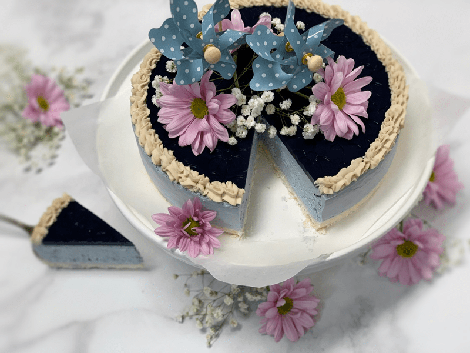

Did the name or the blue color of this cheesecake draw your attention? Or did some foreign force take control of your finger and without thought you found yourself clicking on the title of the recipe? There may be a deeper reason as to why. The color blue represents both the sky and the sea and is associated with open spaces, freedom, intuition, imagination, expansiveness, inspiration, and sensitivity. Blue also represents meanings of depth, trust, loyalty, sincerity, wisdom, confidence, stability, faith, heaven, and intelligence. And you thought you were just hungry for cheesecake?! pft! Your inner being was calling out to you.

Organic Dried Butterfly Pea Tea
What are butterfly peas and what the heck are they doing in my cheesecake!? Butterfly pea is a climbing legume. The stems of the plant are covered with short, soft hairs and beautiful funnel-shaped flowers. The flowers come in different colors including pink, white, and dark blue. These flowers are used to make tea which is reminiscent of green tea.
What’s most interesting about this exotic tea is its ability to change colors. The secret lies in its pH level — the drink changes color depending on the pH of any ingredient that’s added to it. At its first brew, the tea has a deep, midnight blue color. If you add a squeeze of lemon or any acidic liquid, it changes to a beautiful, rich violet. Add hibiscus flowers, and the drink will turn bright red. You can even reverse the color-change by adding baking soda, so your purple liquid turns back blue right in front of your eyes.
According to a study published in the Journal of Ethnopharmacology, the tea is highly valued in Ayurvedic medicine and has been consumed for centuries as a memory enhancer, brain booster, and anti-stress and calmative agent. (source) To learn more about all the health benefits of this wondrous flower tea, click (here).
Lakanto Monkfruit Sweetener
In the ingredient list, I suggest using either maple syrup or the Lakanto Monkfruit sweetener. Neither one is “raw,” but I use both for various reasons. “Lakanto Monk Fruit Sweetener is the only zero calorie, zero glycemic sweetener that is just like sugar. It is made from Monk Fruit which was used for centuries in traditional eastern herbalism to increase chi and well-being, earning it the nickname “The Immortals’ Fruit.” We still grow and harvest Monk Fruit for LAKANTO® in the same pristine area and according to traditional and environmental methods.”
Decorating the Cheesecake
When it comes to decorating the top of the cheesecake, be creative. I had these little pinwheels for about a year now, just waiting for the perfect time to be used. Today was the day and I just love them. :) The dark blue topper is made from Butterfly Pea Tea, a little sweetener, and agar. One day while I was lolly-gagging around Michael’s Craft Store, I spotted a Silicone Fondant impression mat that was 50% off. I don’t use fondant, but I just knew that I would find a way to utilize this fun mat. I will post a link to what I am referring to, but it’s not the exact pattern as mine. Click (here) to see what these mats look like.
These mats come in different sizes and with all sorts of fun patterns, so if this creative idea sparks interest, visit your local Michael’s Craft Store or a bakery supply store. The mat that I found was pretty large, so I used the base of the Springform pan to cut a pattern. You want to make sure that it lays flat when you set it in the base of the pan to create the topper. If it bubbles, the agar mixture will get under it and ruin the pattern. (see photos below)
That about sums it up, today folks. I now deliver to you a creamy, velvety, pillowy baby blue cheesecake that is raw, vegan, gluten-free and filled with butterfly pea. (lol that was wrong of me but downright funny) Have a blessed and happy day, amie sue